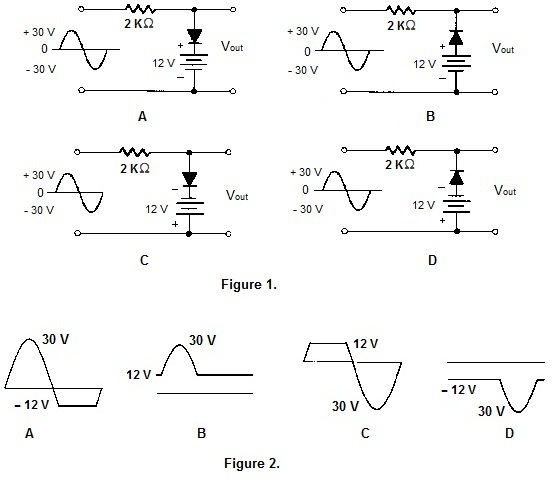

Q.1 What is another name for a clipper?
A) A Limiter
B) A DC Restorer
C) A half - wave rectifier
Ans : A
Q.2 Which of the following is most commonly used to bias the diode in a biased shunt clipper?
A) A battery
B) A potentiometer connected to the circuit dc power supply
C) An AC signal
Ans : B
Q.3 Which of the following is required to protect the signal source for a shunt clipper?
A) A series current-limiting resistor placed between the source and the clipping diode.
B) A bleeder resistor placed in parallel with the clipping diode.
C) A zener diode placed in series with the clipping diode.
Ans : A
Q.4 The clipping action of a diode requires that its forward resistance:?
A) Be zero
B) Have a finite value
C) Be infinite
D) None of the above
Ans : A
Q.5 Refer to the circuit in the Figure 1., Refer to the output waveforms shown in Figure 2 and select the correct approximate output waveform?
A) A

B) B
C) C
D) D
Ans : C
Sources
[LINK]